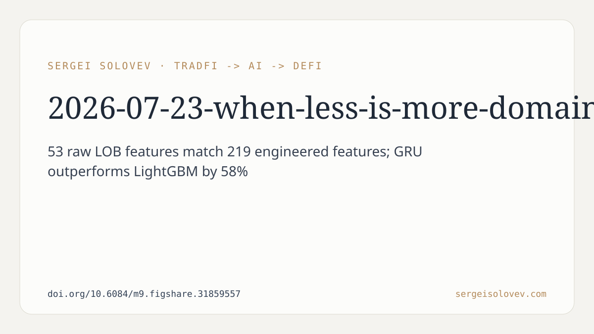

*Honest-arbiter takeaway: feature engineering may be wasted effort for sequential LOB models, and ensembling GRUs with gradient boosting makes things worse. Neither result is what practitioners want to hear.*
---
The paper attacks a specific, well-defined problem: predicting the short-term direction of mid-price movements from limit order book (LOB) data. The authors propose a dual-branch recurrent architecture, DA-BiGRU-CNN, that deliberately separates price-side and volume-side LOB features into independent bidirectional GRU encoders before fusing them through a multi-scale convolutional bottleneck (Conv1d kernels at k = 3, 5, 7). The stated motivation is domain knowledge: price dynamics and liquidity dynamics are structurally different, so a shared encoder may be a suboptimal inductive bias.
That architecture is the headline contribution, but the two empirical findings buried in the abstract are considerably more interesting from a scientific standpoint.
---
The authors trained a unidirectional GRU on two feature sets: 53 raw LOB features, and 219 features that additionally include rolling statistics, exponential moving averages, and lag/difference transforms. The result: statistically equivalent predictive performance.
What this means is narrow but genuinely useful. For this architecture, on this dataset, the recurrent hidden state appears to already capture what the engineered features were designed to provide. Spending engineering effort constructing temporal summaries may simply duplicate what the GRU learns implicitly.
What this does not prove is broader. "Statistically equivalent" does not mean "always equivalent." It means the authors could not detect a significant difference on this dataset, with this evaluation protocol. A different dataset, a different task horizon, or a different architecture could easily reverse this. The finding is not a universal law about feature engineering; it is a data point suggesting diminishing returns in a specific regime.
Still, this matters: applied practitioners routinely invest substantial preprocessing pipeline effort into LOB feature construction. If that effort is recoverable from raw order book state by a recurrent network, the implication for workflow is real. The result is worth replicating before acting on it, but it is worth knowing about.
---
The authors attempted to combine their sequential GRU models with LightGBM, a strong tabular baseline. The combination consistently performed worse than the GRU alone. They call this a "negative ensemble effect."
This directly contradicts a widespread assumption: that model diversity—in this case, architectural diversity between a recurrent network and a tree ensemble—tends to improve aggregate predictions. Here it did the opposite, consistently, not just once.
The honest interpretation is that this is not a paradox so much as a failure of the standard argument. Model diversity only helps if errors are approximately uncorrelated. If the GRU's residual errors are systematically patterned in ways that LightGBM amplifies rather than corrects, blending the two makes things worse. The authors document this occurring; they do not claim to have identified the exact mechanism.
What this does not prove: it does not prove that GRU-boosting ensembles are always counterproductive for financial prediction tasks, nor that the finding generalizes to other ensemble strategies (e.g., stacking with a learned blending layer, or bagging across multiple GRUs). The negative result is specific to this combination and this dataset.
Why it matters: negative results in ensemble methodology are systematically underreported. Practitioners who read only positive ensemble results will continue combining models under the assumption that diversity helps, paying compute and complexity costs for potential degradation. Documenting a concrete failure mode is a genuine contribution to calibration.
---
The GRU baseline achieves a weighted Pearson correlation of 0.266 on a dataset of 12,165 LOB sequences totaling 12.1 million timesteps. The paper notes this outperforms LightGBM by 58% on this metric.
A Pearson correlation of 0.266 is statistically non-trivial for financial time series, where signal-to-noise ratios are notoriously low. It is not, however, a number that implies reliable directional prediction in a trading context. The paper makes no claims about live profitability, transaction costs, market impact, or out-of-sample stability. Readers should not infer those properties from this number. The research demonstrates predictive signal exists in the LOB under the experimental conditions; it does not demonstrate that the signal is exploitable after friction.
---
The DA-BiGRU-CNN is presented as "architecturally principled" in that it mirrors the structural distinction between price and volume in order book data. The claim is modest and honest: it offers an alternative that naturally separates these two channels. The paper does not assert this architecture dominates all alternatives on this dataset; it asserts the decomposition is conceptually motivated.
This is worth noting because architectural claims in deep learning papers often conflate "interpretable design" with "superior performance." The paper appears to avoid that conflation, which is the right call.
---
Three things are true here. First, a straightforward unidirectional GRU on raw LOB features is hard to beat with additional feature engineering, at least on this dataset and architecture class—which is a signal to stop over-engineering preprocessing. Second, blending that GRU with gradient boosting made predictions worse, not better. Third, the absolute predictive performance is modest; there is signal, not a solved problem.
The negative ensemble result is the most practically valuable finding, precisely because it runs against received wisdom and is the kind of result that does not get written up unless someone runs the experiment and reports what actually happened.
---
Full preprint: https://doi.org/10.6084/m9.figshare.31859557